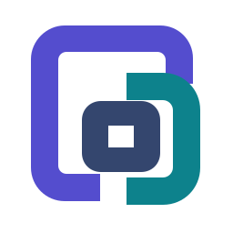
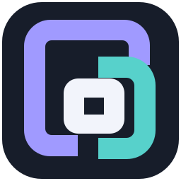
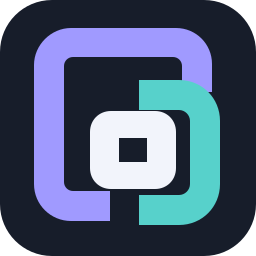
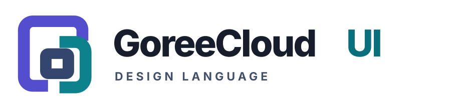
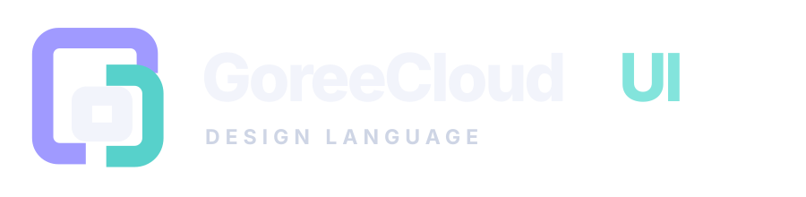
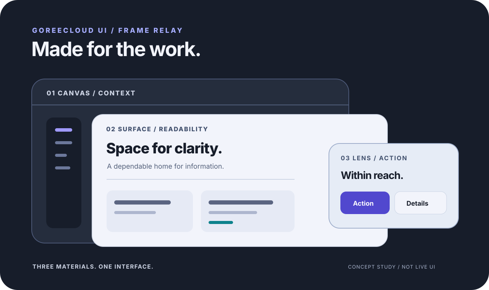

Standalone symbol / light surface

GC UI / SOURCE CANDIDATE / 2026-11-15
Source files preserved for provenance and to prevent reuse of the failed concept. The six SVGs below are historical artifacts only, not approved design directions.
Founder rejected this design on November 15, 2026. Not for adoption. This is an archived failed design study, not an active GoreeCloud UI logo, favicon, launcher, wordmark or artwork. Do not ship, copy into consumer applications, or promote it. GoreeCloud UI requires a new design from the ground up.





A conceptual material study, not evidence of a working live application.
